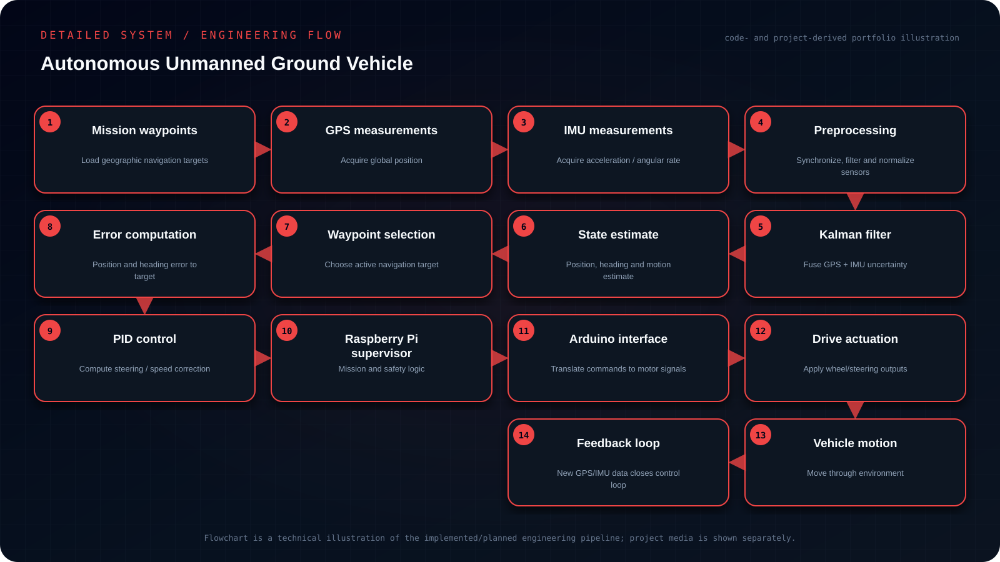

Objective
Build a waypoint-navigation ground vehicle that fuses GPS and IMU measurements for state estimation and uses closed-loop PID control to continually reduce position and heading error during autonomous motion.
- Represent the mission as a sequence of geographic waypoints.
- Fuse noisy GPS and IMU measurements with a Kalman-filter state estimator.
- Convert state estimates into waypoint position/heading errors.
- Close the loop with PID-based steering/speed commands through Raspberry Pi and Arduino actuation.
My contribution
- Implemented a Kalman-filter-based GPS/IMU fusion workflow in Python on Raspberry Pi, then used the estimated state for waypoint guidance and PID control.
- The project connected sensing, estimation and control into one navigation loop.
System architecture
GPS + IMU → preprocessing/state update → Kalman filter → position/heading estimate → waypoint error → PID controller → drive commands.

Read the architecture as text
- Mission waypoints — Load geographic navigation targets
- GPS measurements — Acquire global position
- IMU measurements — Acquire acceleration / angular rate
- Preprocessing — Synchronize, filter and normalize sensors
- Kalman filter — Fuse GPS + IMU uncertainty
- State estimate — Position, heading and motion estimate
- Waypoint selection — Choose active navigation target
- Error computation — Position and heading error to target
- PID control — Compute steering / speed correction
- Raspberry Pi supervisor — Mission and safety logic
- Arduino interface — Translate commands to motor signals
- Drive actuation — Apply wheel/steering outputs
- Vehicle motion — Move through environment
- Feedback loop — New GPS/IMU data closes control loop
Implementation
Implemented a Kalman-filter-based GPS/IMU fusion workflow in Python on Raspberry Pi, then used the estimated state for waypoint guidance and PID control. The project connected sensing, estimation and control into one navigation loop.
Engineering decisions
A standard Kalman filter was used because it matched the available state-estimation formulation and kept the implementation lightweight enough for the Raspberry Pi platform.
Challenges & debugging
Raw GPS and inertial measurements are noisy and arrive with different error characteristics, so navigation requires a usable state estimate before the controller can steer toward waypoints.
Validation
Tested waypoint-following behavior and observed position-estimation stability while tuning controller response. No ground-truth dataset or reproducible position-accuracy benchmark is available here.
Outcome & boundaries
Connected GPS/IMU state estimation, waypoint guidance and PID control in a Raspberry Pi and Arduino navigation loop.
Project sources
Implementation notes and available project sources. Public code is linked where available; descriptive diagrams are not independent validation.


{kind=link}